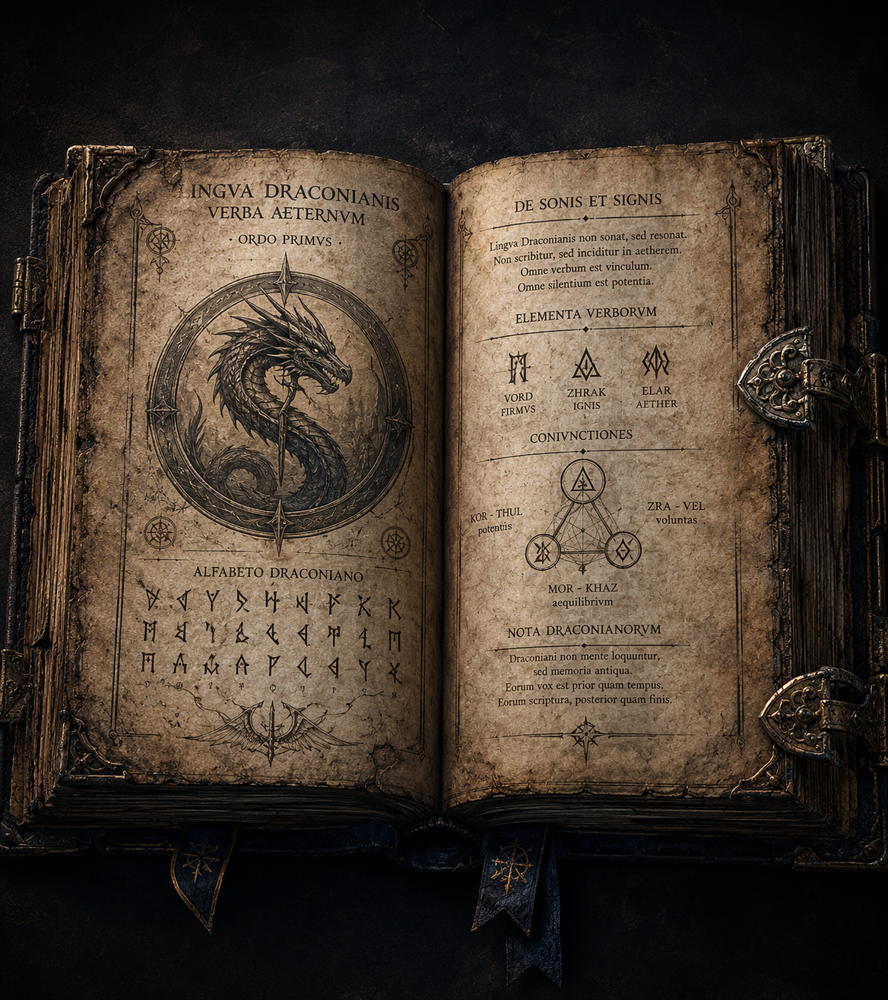
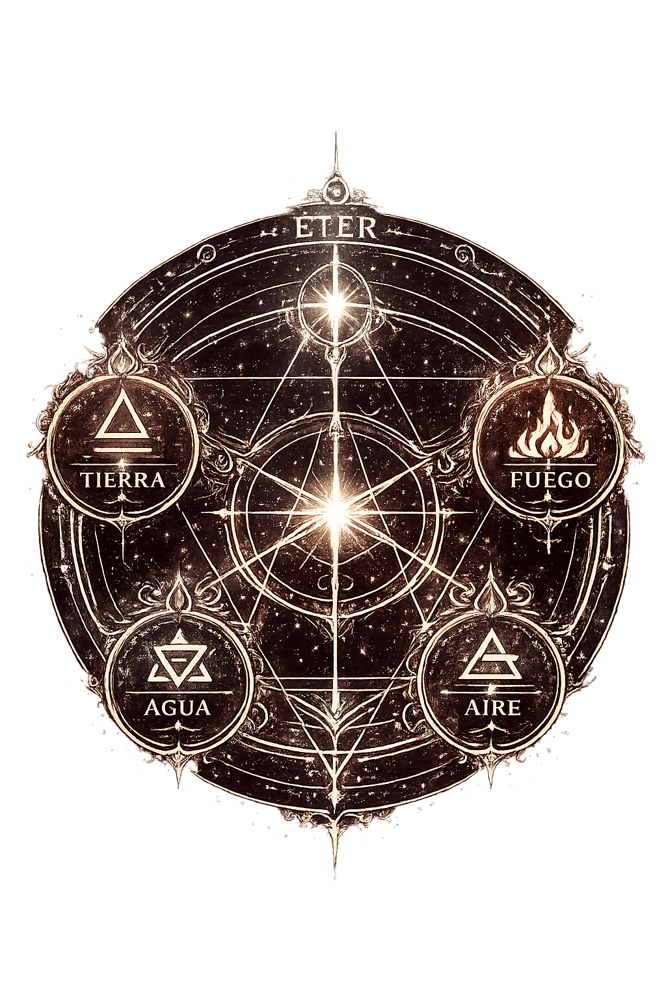
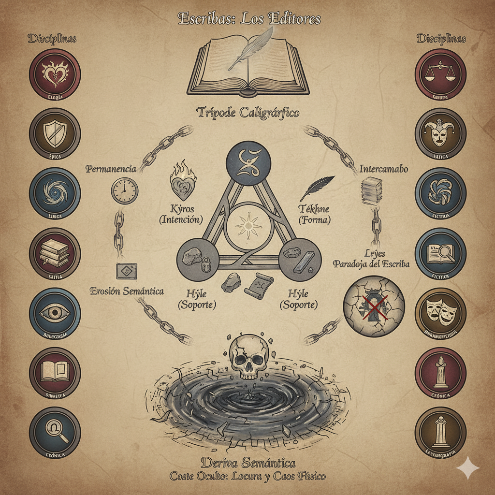

DRAKYN'THAR
Así se conoce al idioma de los dragones en los textos antiguos. No fue creado para ser entendido por humanos, sino para moldear la realidad misma.
Aquí te dejo una canción simbolica de la historia.
ESCUCHAR PRONUNCIACIÓNPalabras antiguas. Poder eterno.
El draconiano es el idioma original de los dragones, anterior a todas las lenguas humanas.
Cada símbolo es una chispa de poder y cada palabra, un eco de su voluntad.
Así se conoce al idioma de los dragones en los textos antiguos. No fue creado para ser entendido por humanos, sino para moldear la realidad misma.
Aquí te dejo una canción simbolica de la historia.
ESCUCHAR PRONUNCIACIÓNAntes de la caída de los Primeros, los dragones gobernaban con su voz. El draconiano no solo nombraba las cosas, las creaba.
Tras el intervalo, el idioma fue fragmentado, sellado en grimorios y olvidado por la mayoría de los mortales.
Hoy, solo un guardián conocen su verdadero origen.

El draconiano combina sonido, intención y significado. Cada palabra se construye a partir de raíces que representan conceptos universales.
Umbra (oscuridad) + Kael (portador)
= Portador de oscuridad
El poder de los elementos en armonía.
Los Guardianes canalizan la energía primordial de los elementos. No dominan, armonizan. Su poder depende de su conexión con la esencia natural del mundo.
SABER MÁSEl poder de las palabras y los símbolos.
Los Escribas no canalizan energía, la escriben. Cada símbolo, cada trazo y cada palabra pueden alterar la realidad si se entienden y se usan correctamente.
SABER MÁSHay palabras que nunca debieron existir.
El draconiano aparece en momentos clave de la saga, siempre relacionado con poder, verdad y legado.
No todos pueden entender o manipular estas artes.
{kind=link}